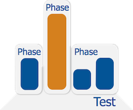
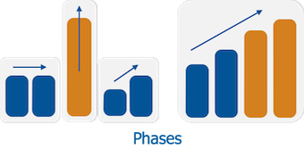

Writing a Megaload test
There are two basic concepts in Megaload that define a load profile: the test and phase. A test can be described as a container of phases, and it is the root element which includes all other elements of the load test specification.

Each test contains a sequence of phases that will be executed in that sequence order. A phase is a description of the load profile defined in terms of rate and number of concurrent scenarios (or users simulated by the test). A phase will have a duration and arrival rate, which determines how fast new scenarios are started. Once the maximum number of concurrent scenarios has been reached, it will keep stable while trying to reach the expected rate.

Each phase may contain several scenarios, which will be executed in parallel during the load test. A scenario contains a sequence of actions which represent requests to the SUT or additional behaviour.
The rest of this chapter explains how to write a very simple test specification using these concepts. The spec section describes in detail all the elements of a test specification.
The following example shows you how to write a test for a small online shop that uses HTTP and JSON. The test uses the calls to list customers and to get a customer's details.
The following call lists the customers:
GET http://<IP>:5050/customers
Response:
{"data" : [
{"id" : "goku",
"email" : "goku@dragon.ball",
"account_balance" : 500,
"currency" : "GBP"
},
{...},
{...}
],
"count" : 4
}
The following call gets the details for a specific customer:
GET http://<IP>:5050/customer/bulma
Response:
{"id" : "bulma",
"email" : "bulma@dragon.ball",
"account_balance" : 750000,
"currency" : "GBP"
}
You can write the test specification in any text editor, or using the embedded editor on the Megaload dashboard. To use the embedded editor, go to the dashboard, click Load Test and then Edit test cases.
Step 1: Define a plugin
The plugin is the target server or system under test (SUT). A plugin looks as follows:
{
"plugin" :
{
"id" : <ID>,
"plugin_info" : <SPECIFIC_PLUGIN_INFO>
}
}
idspecifies a name for the plugin.plugin_infocontains the plugin details.
For Example:
{
"plugin" :
{
"id" : "SUT-server",
"plugin_info" : {"http-plugin" :
{"servers" :
[
{ "host" : "127.0.0.1",
"port" : 80,
"ssl" : false }
],
"stats_per_url" : true
}
}
}
}
Step 2: Define a scenario
Our example has a simple scenario with a single request. A scenario looks as follows:
{
"scenario" :
{
"id" : <ID>,
"keepalive" : <REUSE_CONNECTION>,
"actions" : <ACTIONS>
}
}
idis he name you give the scenario.keepalivespecifies whether to repeate the scenario and reuse open connections.actionswill contain the actions that should be executed - in this example an HTTP request.
An HTTP request looks as follows:
{
"http-request" :
{
"plugin_id" : <PLUGIN_ID>,
"method" : <HTTP_REQUEST_METHOD>,
"path" : <HTTP_REQUEST_URI>
}
}
For our example test:
{
"http-request" :
{
"plugin_id" : "SUT-server",
"method" : "GET",
"path" : "/customers"
}
}
The complete scenario:
{
"scenario" :
{
"id" : "get-customers",
"keepalive" : true,
"actions" : [{"http-request" :
{
"plugin_id": "SUT-server",
"method": "GET",
path": "/customers"
}
}],
}
}
Step 3: Define a phase
A phase includes a load profile that specifies a ramp-up time (so that the system is not immediately overloaded) and the maximum rate and number of processes. It also specifies which scenarios to execute.
{
"phase" :
{
"id" : <ID>,
"arrival_rate" : <RAMP_UP_ARRIVAL_RATE>,
"duration" : <TEST_DURATION>,
"concurrent_scenarios" : <MAX_CONCURRENT_SCENARIOS>,
"rate" : <RATE>,
"scenarios" : <SCENARIOS>
}
}
idis the name you give the phase.arrival_ratespecifies an arrival rate in number of scenarios started per second.durationspecifies the duration of the phase in milliseconds.concurrent_scenariosspecifies the maximum number of concurrent scenarios.ratespecifies the maximum number of requests per second.scenariosis used for specifying which scenarios to run and the frequency to choose them. In this example, we will run the scenario from the previous step.
The complete phase for this example:
{
"phase" :
{
"id" : "SUT-low",
"arrival_rate" : 10,
"duration" : 60000,
"concurrent_scenarios" : 100,
"rate" : 250,
"scenarios" : [{"get-customers" : 1}]
}
}
Step 4: Define a test
A test is a container of phases. It looks as follows:
{
"test" :
{
"id" : <ID>,
"phases" : <PHASES>,
"plugins" : <PLUGINS>
}
}
idis the name you give the test.phaseswill specify which phases to run. In this example, we will run the phase from the previous step.pluginsspecifies the plugin to use.
Step 5: Put together a valid JSON document
Megaload input is a list of JSON objects:
[
{"test" : ... },
{"plugin" : ... },
{"phase" : ... },
{"scenario" : ... }
]
You can now save the test (for example, as SUT-test-example.json), upload the text file using the Megaload dashboard and run the test. However it would be useful to include some checks in the test, using Megaload assertions.
Assertions
Megaload assertions can be included in both test and phase specifications. These assertions can check the value of any counter in the system and match it against the provided specification. Assertions are explained in more detail in the section assertions.
{
"test" :
{
"id" : "SUT-test",
"phases" : ["SUT-low"],
"plugins" : ["SUT-server"],
"assertions" : <ASSERTIONS>
}
}
The assertions can include counters and histograms, as shown below.
[
{"assert-counter" :
{"id" : "global_counter_failedRequests",
"metric" : "count",
"filter" : {"eq" : 0}}
},
{"assert-histogram" :
{"id" : "http_histogram_responseTime",
"statistic" : "mean",
"filter" : {"lt" : 150000}}
}
]
When you run the test, you can view the results of the assertions on the Load report page.
There is a different kind of assertion that can be used to validate the response code and content of HTTP responses. These assertions are used to determine whether a request is successful or not and increase the related counter. Thus, the test and phase assertions can be combined with these HTTP assertions to validate the result of a test.
Assertions are included in the HTTP request with the following format:
{
"http-request" :
{
"plugin_id" : <PLUGIN_ID>,
"method" : <HTTP_REQUEST_METHOD>,
"path" : <HTTP_REQUEST_URI>,
"assert_status" : <HTTP_RESPONSE_STATUS_CODE>,
"assert_body" : <ACTION_CHECK>
}
}
To validate the response code:
{
"http-request" :
{
"plugin_id" : "SUT-server",
"method" : "GET",
"path" : "/customers",
"assert_status" : "200"
}
}
To validate the content:
{
"http-request" :
{
"plugin_id" : "SUT-server",
"method" : "GET",
"path" : "/customers",
"assert_body" :
{"jsonpath-value" :
{"path" : "body.count",
"value" : 5}}
}
}
Megaload automatically updates counters for successful and failed requests:
global_counter_successfulRequestsglobal_counter_failedRequestshttp_counter_successfulRequests_<SUT_IP>http_counter_failedRequests_<SUT_IP>
The following checks whether a user is a customer of the shop:
{
"http-request" :
{
"plugin_id" : "SUT-server",
"method" : "GET",
"path" : "/customer/jack",
"assert_status" : "404"
}
}
When you run the test, go to Load report > Assertion details on the dashboard to view the results.